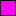

Use light-opacity RGBA to fix halo artifacts along edges of textures
This is a quick post in response to the Vimeo video post Getting Rid of White Halos in Transparent Textures by FlashBang Studios (creators of the awesome Offroad Velociraptor Safari).
Thanks to FlashBang for the video - the fix you describe, and the plugins you use to achieve it, are good to know about. If I'm interpreting the cause of the white haloes you describe correctly, then your fix applies to more than just Unity development.
Also, you might want to know that there is an alternative solution to this problem. This alternative solution requires small code changes, and is possibly slightly trickier to get your head around, but possibly has a small advantage in that it requires no ongoing effort by the artists (e.g. applying and undoing plugin actions to color transparent pixels) once in place. I don't use Unity, so this might not apply in that environment, but just in case, here goes:
The alternative solution is to save textures using light-opacity RGBA (a.k.a. pre-multiplied alpha), and then blend them in the engine using a more appropriate OpenGL blending mode. I learned about this from Brian Fisher's post on the pylget forums. I aim to paraphrase his explanation of it here in order to cement my own understanding of it.
To elaborate, as I understand it, the issue is caused by the bilinear interpolation between the RGBA of your transparent pixels, and your icon texture color. For example, for various transparencies of purple on top of a blue background:
|  icon (1, 0, 1, 1) fully opaque purple
|  interpolation (1, 0.5, 1, 0.5) half-transparent whitish-purple
|
interpolation (1, 0.5, 1, 0.5) half-transparent whitish-purple
|  background (1, 1, 1, 0) fully transparent white
background (1, 1, 1, 0) fully transparent white
(Update: I think some CSS nuance has been lost in a website migration. On quick glance, this doesn't seem to look like I expect it to, any more.)
The intermediate color isn't actually very close to white, but in contrast to the pure purple it abuts against, it's significantly paler, and causes the 'white looking halo' effect around the edge of the purple icons, as shown in the video.
Note that changing the color of the transparent pixels, from white to black for example, does not fix the problem - it just changes the color of the haloes from white to black.
The video shows how to fix this, using a technique that I infer is very common - change your transparent pixels to be the same color as whatever colors they abut against. The background pixels are now fully-transparent purple, giving us:
| icon (1, 0, 1, 1) fully opaque purple
|  interpolation (1, 0, 1, 0.5) half-transparent whitish-purple
|
interpolation (1, 0, 1, 0.5) half-transparent whitish-purple
|  background (1, 0, 1, 0) fully transparent purple
background (1, 0, 1, 0) fully transparent purple
So now the interpolation ends up being half-transparent pure purple. This eliminates the white halo artefact, as demonstrated in the video. The only minor downside is that the artist has to make sure the transparent pixels are saved with the correct RGB values, and the plugin demonstrated in the video helps to automate this.
The alternative solution, is to modify the RGBA values in the texture, by pre-multiplying the RGB values by the A value. ie:
R = R * A
G = G * A
B = B * A
(where all values range from 0.0 to 1.0)
This can either be done in the saved texture file (eg. 3d Studio Max writes TGA files this way.) Or, if you'd rather continue to use standard RGBA values in your saved texture files, then your application could do this transformation when loading image files from disk.
To use these alternate RGBA values in a texture, we have to display them on screen using a different OpenGL blending mode. We switch from using the traditional:
dest = src * alpha + dest * (1 - alpha)
to using this instead:
dest = src + dest * (1 - alpha)
Note how the difference between the two is that the src is no longer multiplied by the src alpha during blend. This is no longer required, because we have already done this multiplication in the RGBA of the src texture itself.
Storing RGBA values in this format is known as light-opacity RGBA, and it gives us a new interpretation of the meaning of the RGBA values. Previously, the RGB told us the color of the texture's pixel, but did not tell us how much this color would be used to affect the destination. We have to look at the alpha to determine that.
Now, using the new blending mode, we can interpret the RGB values to literally mean how much R and G and B is added to the destination. Similarly, the A value is now only used to diminish whatever existing color is currently at the destination. It is not used to scale the source RGB before applying it to the destination. The A value can now be interpreted to mean 'what proportion of the existing destination color is visible through the overwritten source color'.
This implies that for pixels to be fully transparent, ie to have no effect on the destination, they must have an RGB of 0. So we must always use (0, 0, 0, 0) to represent fully transparent pixels. Note how with the new interpretation of RGBA, these are not 'black' transparent pixels, they are literally 'no-color' transparent pixels. This obviously has a neat logical correposondance to what 'pure transparency' really means.
The pixels around the edge of the purple icon still get the same interpolation process, resulting in the same RGBA values as would have been calculated before, but now we have a different interpretation of what those values mean:
| icon (1, 0, 1, 1) - pure purple that fully overwrites the previous color
|  interpolation (0.5, 0, 0.5, 0.5) - half-bright purple mixed with 50% of the prev dest color
|
interpolation (0.5, 0, 0.5, 0.5) - half-bright purple mixed with 50% of the prev dest color
|  background (0, 0, 0, 0) - fully transparent (no color)
background (0, 0, 0, 0) - fully transparent (no color)
The interpolated color is now blended with the previous destination color using the new OpenGL blend mode:
dest = src + dest * (1 - alpha)
The existing destination color is scaled by (1 - alpha), ie, is reduced to half intensity, and then the RGB from our interpolated texture (0.5, 0, 0.5) is added to it. This results in a half-transparent purple - even though the transparent pixels in our texture had no purple at all in them. This results in a perfect blend between the transparent and pure purple colors. No haloes are visible.
Update: It crosses my mind to mention that the halo artefacts will be visible whenever textures are scaled, rotated, or positioned using sub-pixel co-ordinates. If you only ever display unrotated textures, at integer pixel co-ords, and at normal size, then you won't run into this problem. Since the icons on the radar on FlashBang's video don't seem to be scaled or rotated, maybe they could sidestep the problem by just displaying the icons at integer pixel co-ordinates? I don't really know anything about how their code works though, so I might be talking nonsense here.